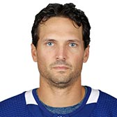

MAPLE LEAFS
| Photo |
Name |
Number |
Position |
Shot |
Height |
Weight |
Birthday |
Hometown |
|
Connor Brown |
28 |
RW |
R |
6' 0" |
183 |
Jan 14, 1994 |
Toronto, ON, CAN |
|
Tyler Ennis |
63 |
C |
L |
5' 9" |
161 |
Oct 6, 1989 |
Edmonton, AB, CAN |
|
Frederik Gauthier |
33 |
C |
L |
6' 5" |
235 |
Apr 26, 1995 |
Laval, QC, CAN |
|
Zach Hyman |
11 |
C |
R |
6' 1" |
209 |
Jun 9, 1992 |
Toronto, ON, CAN |
|
Andreas Johnsson |
18 |
LW |
L |
5' 10" |
181 |
Nov 21, 1994 |
Gävle, SWE |
|
Nazem Kadri |
43 |
C |
L |
6' 0" |
192 |
Oct 6, 1990 |
London, ON, CAN |
|
Kasperi Kapanen |
24 |
RW |
R |
6' 1" |
192 |
Jul 23, 1996 |
Kuopio, FIN |
|
Par Lindholm |
26 |
C |
L |
6' 0" |
183 |
Oct 5, 1991 |
Kusmark, SWE |
|
Patrick Marleau |
12 |
C |
L |
6' 2" |
218 |
Sep 15, 1979 |
Aneroid, SK, CAN |
|
Mitchell Marner |
16 |
C |
R |
6' 0" |
175 |
May 5, 1997 |
Markham, ON, CAN |
|
Auston Matthews |
34 |
C |
L |
6' 3" |
220 |
Sep 17, 1997 |
San Ramon, CA, USA |
|
William Nylander |
29 |
RW |
R |
6' 0" |
191 |
May 01, 1996 |
Calgary, AB, CAN |
|
John Tavares |
91 |
C |
L |
6' 1" |
209 |
Sep 20, 1990 |
Mississauga, ON, CAN |
| Photo |
Name |
Number |
Shot |
Height |
Weight |
Birthday |
Hometown |
|
Travis Dermott |
23 |
L |
6' 0" |
202 |
Dec 22, 1996 |
Newmarket, ON, CAN |
|
Jake Gardiner |
51 |
L |
6' 2" |
203 |
Jul 4, 1990 |
Minnetonka, MN, USA |
|  |
Ron Hainsey |
2 |
L |
6' 3" |
205 |
Mar 24, 1981 |
Bolton, CT, USA |
|
Justin Holl |
3 |
R |
6' 4" |
205 |
Jan 30, 1992 |
Tonka Bay, MN, USA |
|
Martin Marincin |
52 |
L |
6' 5" |
213 |
Feb 18, 1992 |
Kosice, SVK |
|
Igor Ozhiganov |
92 |
R |
6' 2" |
210 |
Oct 13, 1992 |
Krasnogorsk, RUS |
|
Morgan Rielly |
44 |
L |
6' 1" |
218 |
Mar 9, 1994 |
Vancouver, BC, CAN |
|
Nikita Zaitsev |
22 |
R |
6' 2" |
190 |
Oct 29, 1991 |
Moscow, RUS |
| Photo |
Name |
Number |
Height |
Weight |
Birthday |
Hometown |
|
Frederik Andersen |
31 |
6' 4" |
230 |
Oct 2, 1989 |
Herning, DNK |
|
Garret Sparks |
40 |
6' 3" |
201 |
Jun 28, 1993 |
Elmhurst, IL, USA |